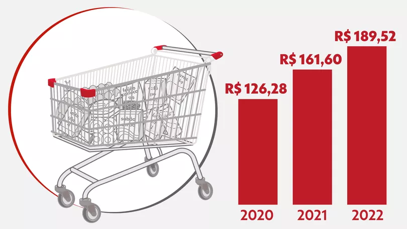

Como o poder de compra de R$ 200 diminuiu e esvaziou carrinho
Quem faz as contas já reparou: os preços nos supermercados estão cada vez mais altos. Em abril, a prévia da inflação oficial do Brasil, medida pelo IPCA-15, acumulou alta de 12,03% em 12 meses. Entre os itens que mais subiram no período, a cenoura leva o troféu, com alta de 195%. Tomate e abobrinha completam o pódio, subindo 117,48% e 86,83%, respectivamente.
Ler notícia/https://s2.glbimg.com/d8n5UI9HVG7XHY6rSS12rmiV8tA=/1200x/smart/filters:cover():strip_icc()/i.s3.glbimg.com/v1/AUTH_59edd422c0c84a879bd37670ae4f538a/internal_photos/bs/2022/A/2/gNklPLT2uOVvfYdxDETA/aracacaantes.jpeg)
PF reitera não ter visto indícios de crime contra criança ianomâmi
Delegado à frente do caso afirma que, até agora, o que ocorreu foi "um conflito de narrativas". Investigação segue em andamento.
Ler notícia